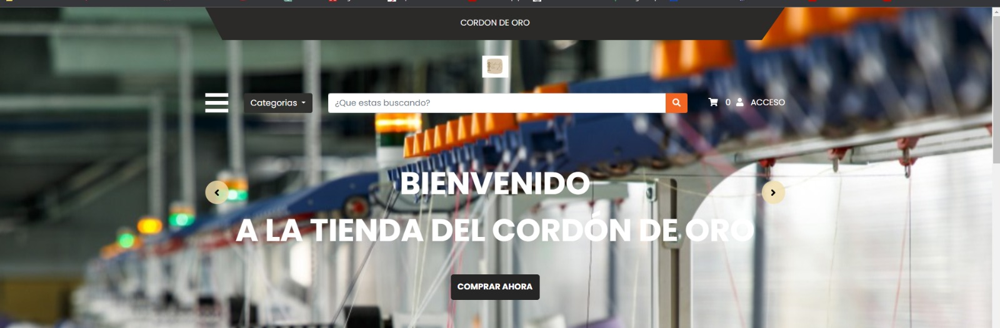
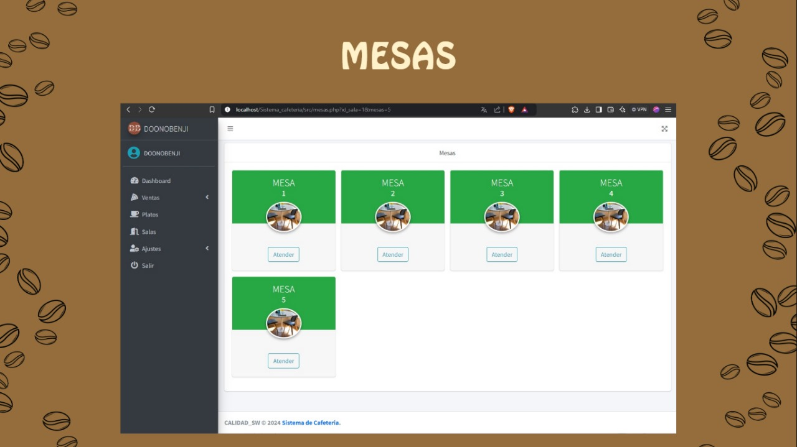
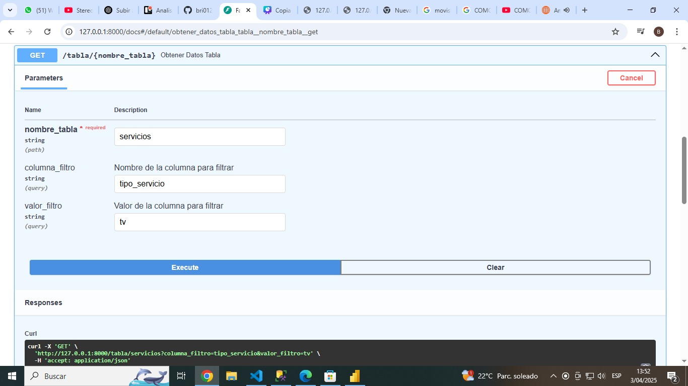
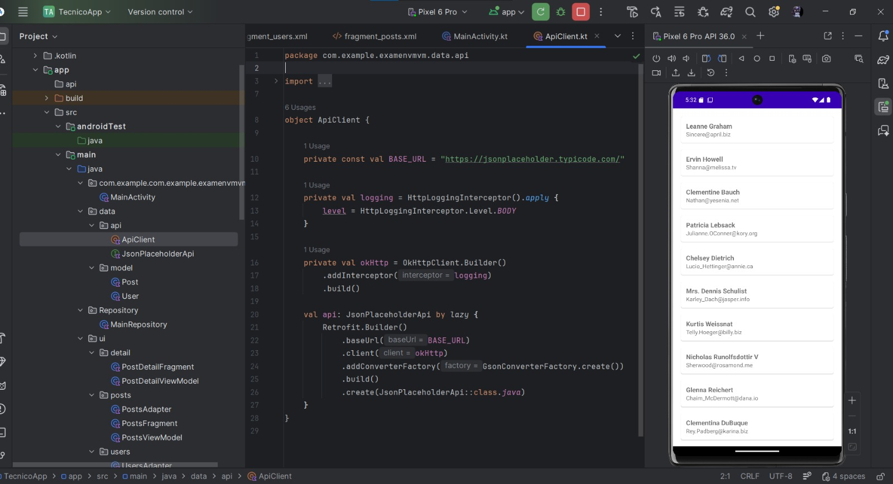
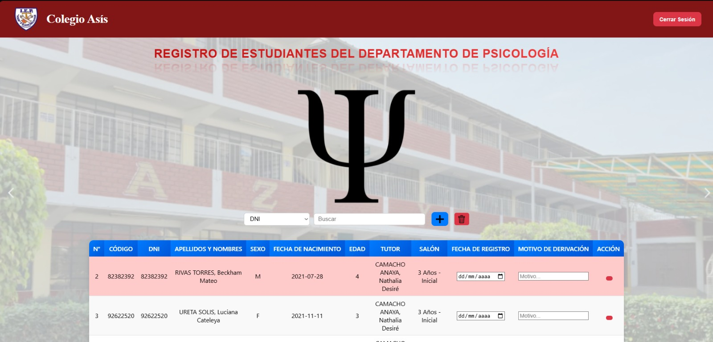
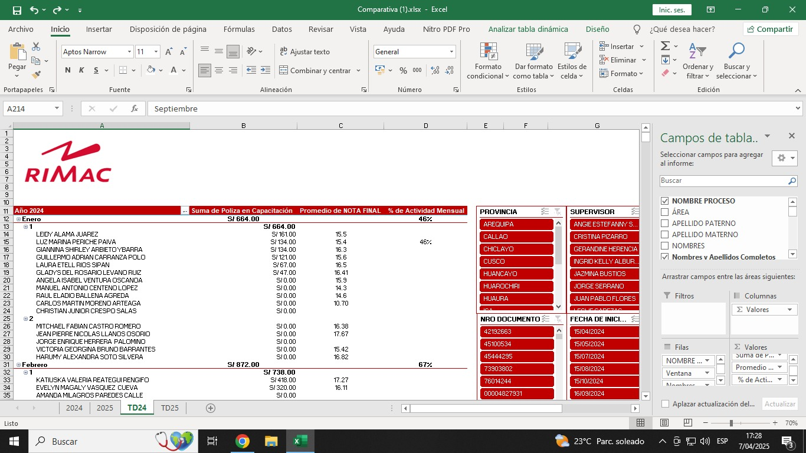

Egresada de Ingenieria de Sistemas en la Universidad Cesar Vallejo
Soy desarrolladora de software con experiencia en la creación de soluciones digitales orientadas a la optimización de procesos y la toma de decisiones. He desarrollado páginas web y plataformas dinámicas, así como sistemas internos para el seguimiento de producción y gestión de información, mejorando la comunicación y eficiencia operativa. Además, cuento con experiencia en Business Intelligence mediante el diseño de dashboards en Power BI, integración de datos desde diversas fuentes (PHP, MySQL, AWS) y automatización de flujos de información. También he trabajado en el desarrollo de aplicaciones móviles y de escritorio, y poseo un manejo avanzado de Microsoft Excel para el análisis y gestión de datos, lo que me permite aportar soluciones completas, prácticas y enfocadas en resultados.

Desarrolladora de Software Interna | 2025
Web informativa y sistema interno de producción con registro de prendas, indicadores de rendimiento y comunicación en tiempo real.

Desarrolladora Web Freelance | 2025
Plataforma web dinámica con catálogos en tiempo real y diseño moderno adaptable a móviles.

Desarrolladora de Soluciones BI | 2025
Dashboards en Power BI, integración PHP/MySQL/AWS y optimización de consultas SQL.

Aplicación Móvil | 2025
Lectura de CSV, RecyclerView, WebView y visualización de datos en Android Studio.

Soluciones BI | 2025
Dashboards, app de escritorio y módulo de registro psicopedagógico.

Excel Avanzado | 2025
Tablas dinámicas, automatización y optimización de datos para decisiones.
HTML, JavaScript, PHP, SQL, NoSQL
MySQL, SQL Server
Power BI, Android Studio, Unity, Figma, Bizagi, Cinema 4D, Visual Studio Code, NetBeans IDE, Cisco Packet Tracer
Diseño Web, Metodologías Ágiles (Scrum)
Big Data, ETL, Analítica, Gestión y calidad de datos, Ciclo de vida de datos
Excel, Word, PowerPoint (nivel avanzado)
Email: sanchezbrighit8@gmail.com
Teléfono: 945803997